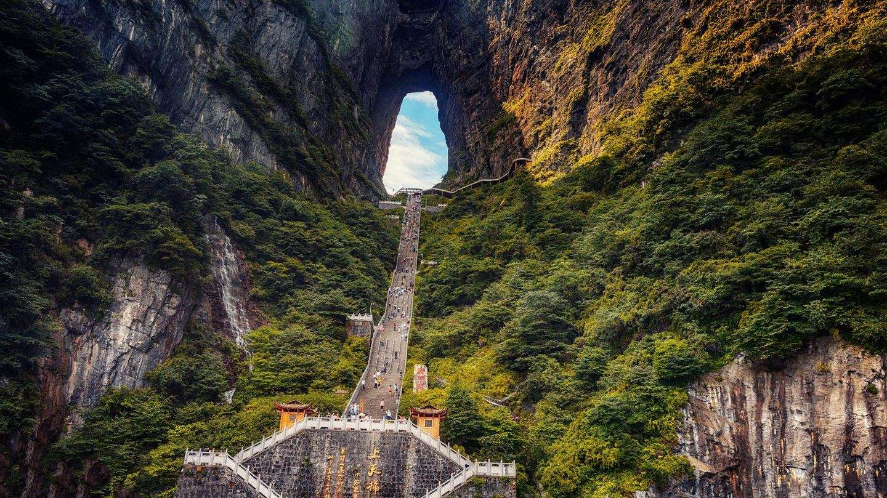
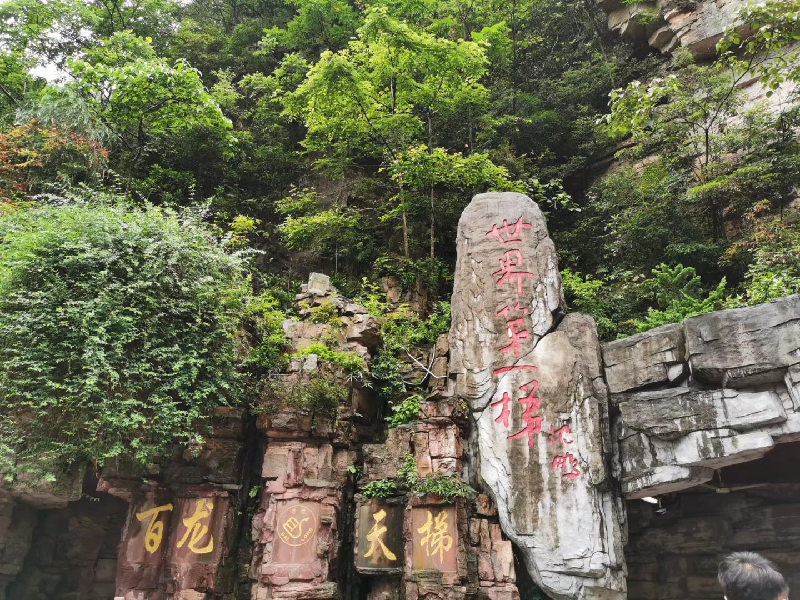

地层和构造的特殊条件，使张家界的矿产以沉积形成的矿产为主，有煤、铁、镍、钼，其次有低温热液形成的铅、锌、铜，非金属矿产有石灰岩、白云岩、大理石、萤石、重晶石、硅石（石英）等，例如青安坪就有丰富的大理石、煤、铁等资源，还有矿泉水。形成武陵源景区奇特的砂岩峰林地貌的石英砂岩也是一种矿产资源，其二氧化硅含量达百分之九十至九十九点零六，是生产石英玻璃的优质原料。
张家界市有林业用地面积1012亩，占71%。森林覆盖率达64.61%，名列湖南省第一。城市实施了“美化、亮化、净化”工程，人均拥有绿地1.55平方米，是理想的生态旅游区、国际度假区。 形成武陵源景区奇特的砂岩峰林地貌的石英砂岩也是一种矿产资源，其二氧化硅含量达百分之九十至九十九点零六，是生产石英玻璃的优质原料。
 |
 |
 |